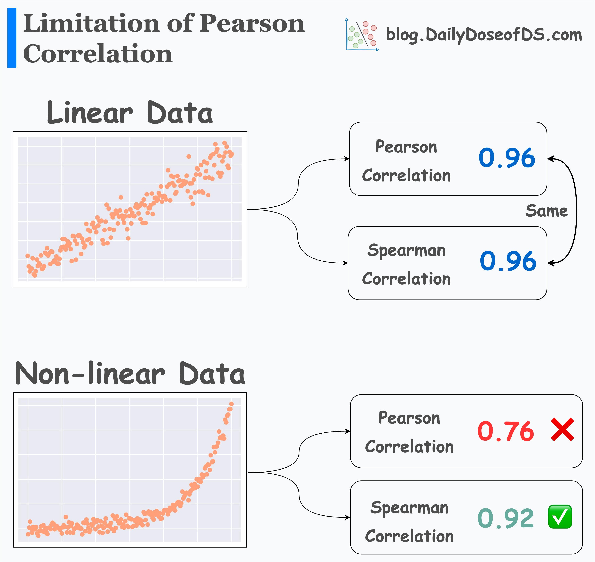

Lab 3.2 Clarifications
Assignment-1: Spearman vs. Pearson Correlation Coefficients
For the part labeled Assignment-1 within your Lab 3.2 Assignment, you are asked to fill in the code for the following function:
def merit(x,y,correlation="pearson"):
# x=matrix of features
# y=matrix (or vector) of targets
# correlation="pearson" or "spearman"
# INSERT CODE HERE As written here, this function therefore has to accept an optional argument called correlation, such that:
- If someone calls the function without specifying a value for the
correlationargument, then it should default to using the Pearson correlation coefficient:
merit(x, y) # Should use Pearson method- Otherwise, if someone calls the function with a value specified for the
correlationargument, then it should use the specified approach:
merit(x, y, 'pearson') # Should use Pearson method
merit(x, y, 'spearman') # Should use Spearman methodWhat Are Spearman and Pearson Coefficients?
To clarify this conceptually, I’ve found the following diagram extremely helpful:

That is, both approaches should agree on the correlation between \(x\) and \(y\) values which are linearly correlated, but (at least, in the context of the data that the Substack post is talking about) the Spearman approach can be better at “detecting” non-linear relationships between \(x\) and \(y\) values.
The Practical Difference (In Code)
For your sake, though, it is probably more important to know the difference in terms of the code you would use to find the specific type of coefficient that the person calling your function is asking for. So, by Googling “Spearman correlation in Python” and “Pearson correlation in Python”, you can find a bunch of approaches (and, you should look at them!), but I have found that Python’s SciPy library is extremely helpful for us here, since it contains straightforward implementations of both the Spearman and Pearson approaches within the same module:
What Do rho_xx and rho_xy Represent?
I also wanted to clarify, quickly, that the code immediately above the Assignment-1 section of the assignment page is not actually computing the merit score for a dataset, it is just showing example values that you might obtain for the merit score.
Meaning, the reason why you don’t see any actual data (any actual DataFrames or NumPy matrices, for example) in those code blocks is because there is no data: these code blocks are to show you the types of numeric values that you would obtain for the merit score if you already knew the values to plug in.
In your case, though, you cannot just plug in some numeric value like rho_xx=0 or rho_xy=-1. You have to compute these two values from a dataset containing \(X\) and \(y\) data (for example, the data that is generated by the code block with #GENERATE INTENTIONALLY CORRELATED DATA at the top), as follows:
rho_xx:
The mean of \(\textsf{corr}(x_i, x_k)\), where \(x_i\) represents the vector of data for feature \(i\), \(x_j\) represents the vector of data for feature \(j\), and \(\textsf{corr}()\) is the specified correlation method (Pearson or Spearman)
rho_xy:
The mean of \(\textsf{corr}(x_i, y)\), where \(x_i\) represents the vector of data for feature \(i\), \(y\) represents the vector containing labels for each observation, and \(\textsf{corr}()\) is the specified correlation method.
All of this is to say that, when writing the merit() function, I strongly recommend writing two additional helper functions, like I do in the feature selection lab writeup:
compute_mean_xx_corr(X)andcompute_mean_xy_corr(X, y)
Where compute_mean_xx_corr(X) will compute the mean of all pairwise correlations between columns of \(X\), and hence will produce rho_xx, while compute_mean_xy_corr(X, y) will compute the mean of the correlation between each column of \(X\) and the vector \(y\), and hence will produce rho_xy.
Then, using these two functions as “subroutines” for your merit() function, it will start to look a lot more like the code blocks above the start of the Assignment-1 section. As general starter code, for example, your code could look something like the following:
def merit(X, y, correlation='pearson'):
k = _ # Number of columns in X
rho_xx = _ # Something that computes mean of corr(x_i, x_j)
rho_xy = _ # Something that computes mean of corr(x_i, y)
merit_numerator = k * rho_xy
merit_denominator = np.sqrt(k + k * (k - 1) * rho_xx)
merit_score = merit_numerator / merit_denominator
return merit_scoreHopefully that helps, in terms of thinking about the additional stuff you have to do to obtain the rho_xx and rho_xy values, that you then use to compute the merit score using the equation given at the beginning of the assignment.